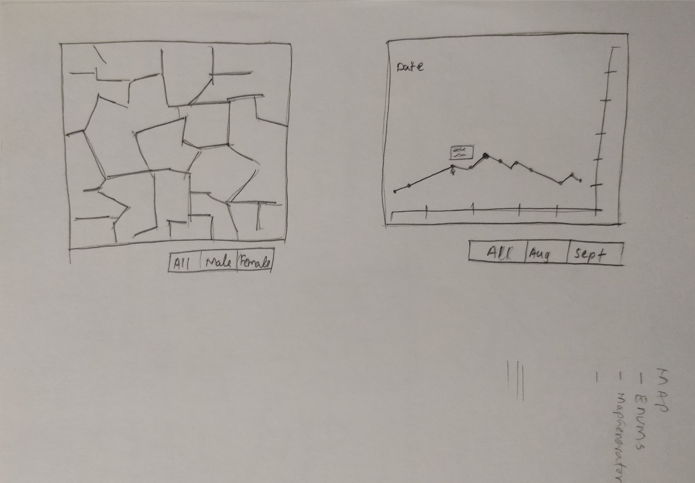
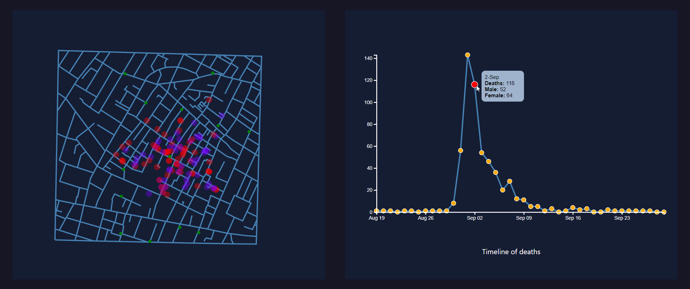
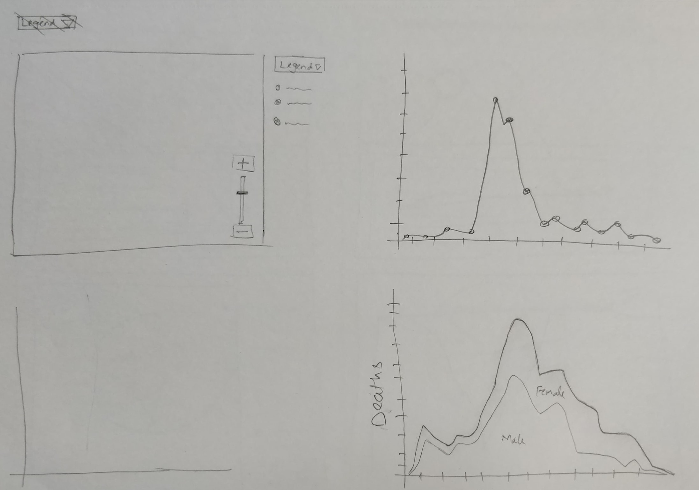
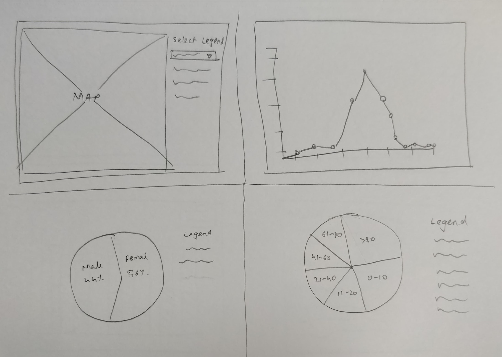
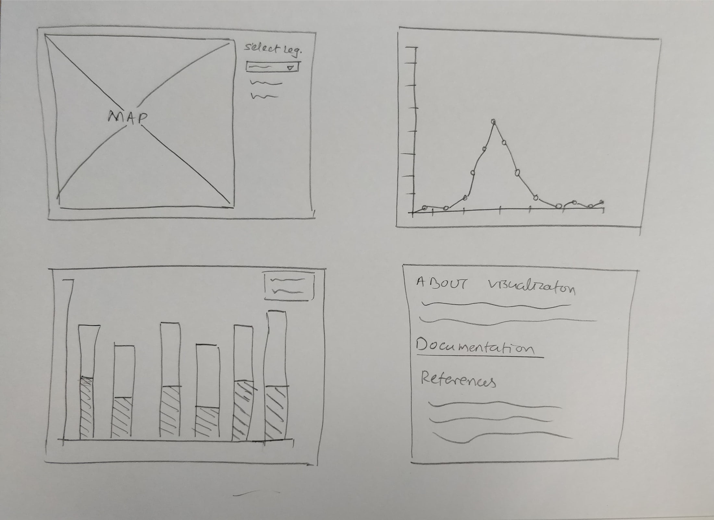
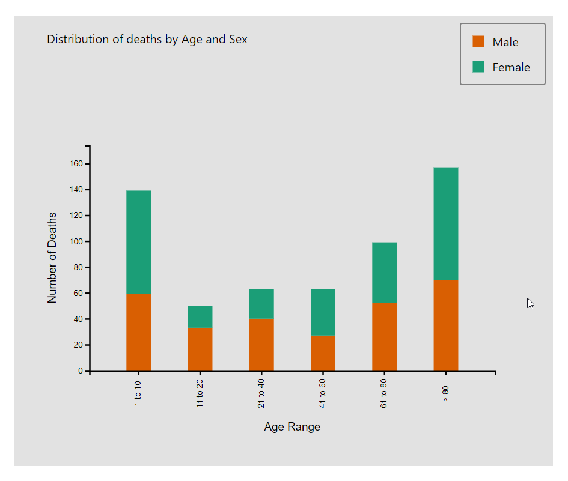
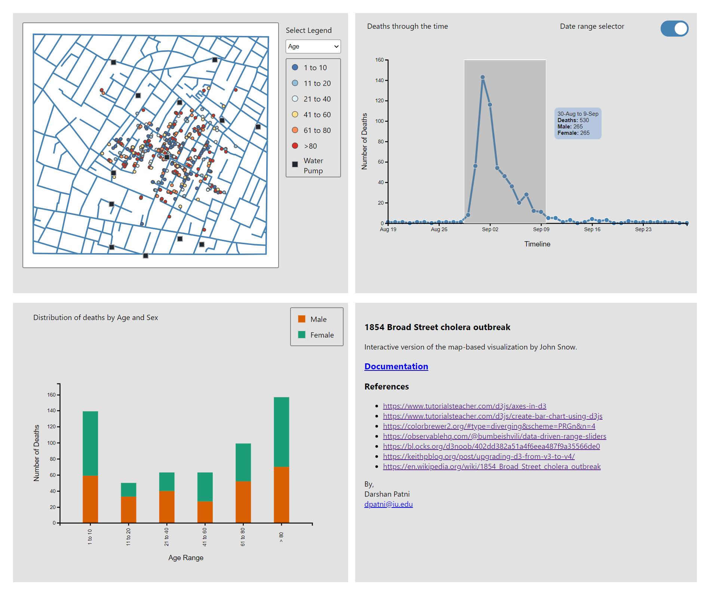
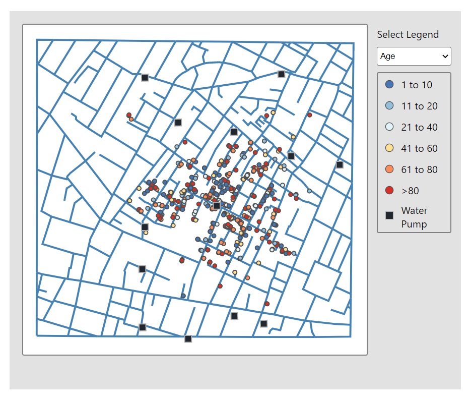
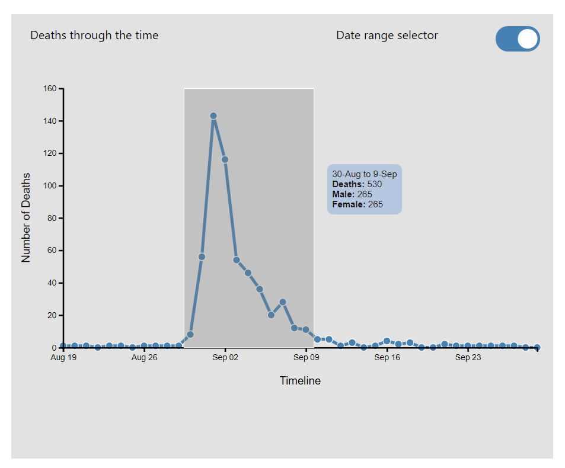

Documentation
Design Process:
The following design iterations were made as more data was analyzed.
Iteration 1

The initial idea was to mark deaths on the generated map and plot the number of deaths per day on a line graph. Each data point on the line graph would be represented by a circle, and hovering over the circle would show a tooltip with details of deaths.
The output of iteration 1:

Iteration 2:

Next iteration had a line chart that would show male and female deaths over time. However, such visualization would not produce any new insights.
Iteration 3:

In this sketch, more details were added to the map section. A dropdown that would allow the user to select Legend for displaying points on the map (For example, Sex, and Age). Two pie chart visualizations were also sketched, one showing the overall percentage of Male and Female deaths and another showing the overall percentage of deaths by age range.
Iteration 4:

Here the two pie charts were replaced with one stacked bar graph combining three variables: Number of deaths, Sex and Age. The following image shows the stacked bar graph visualization:

Final Design

The final design has been divided into four sections:
- Map
- The map shows the location of all deaths marked by this color. The map section also allows users to select legend, i.e., to color code the death marks by Age or Sex. The different age ranges are colored as 1 to 10, 11 to 20, 21-40, 41-60, 60-80, and >80. These colors were selected because they present a diverging pattern and are color-blind friendly. Colors representing sex are Male and Female; these colors were selected based on contrast and from a color-blind friendly palette. The markers representing the location of deaths are interactive i.e., when the user hovers over the markers, a tooltip is displayed with Date of the death, Age range, and Sex.
- Line Chart
- The line chart shows the number of deaths over time. Hovering or pointing over the circular points representing a particular date will reveal a tooltip that displays the date, number of deaths on a date, number of male and female deaths. Hovering over or clicking these points also filters the marks on the map by date. This section also has a range selector toggle. Turning on this toggle allows the user to drag and draw a rectangle to select the range of dates. On drawing a rectangle, a tooltip displaying the date range, total deaths, total male and female deaths in that range will appear. And the marks in the map will change to represent the data from the selected date range.
- Stacked Bar Graph
- The stacked bar represents data for three variables: Number of Deaths, Age range, and Sex. This visualization allows the user to easily perceive the highest and lowest deaths in a particular death range and also the amount of male and female deaths in a specific range of age. The colors used to stack bars are Male and Female; these colors are consistent with the sex legend from the map.
- Documentation & References
- This section contains a link to the documentation page and references.
Insights

The initial insight gained by looking at the map is deaths are concentrated more near the pump in the relative center of the map than the other pumps. Suggesting that something may be amiss with the water.

In the above image date range of 30-Aug to 9-Sep shows a sudden increase and decrease in the death toll. This rise and fall can help uncover when the water from the pumps was contaminated the most.
The stacked bar indicates a higher death rate between the ages of 1-10 and above 80. This may be attributed to low immunity in children and elders. Ignoring the age range of 1-10, there seems to be a positive correlation between age and death toll. Further, it shows the death toll of both male and female sex is almost equal.